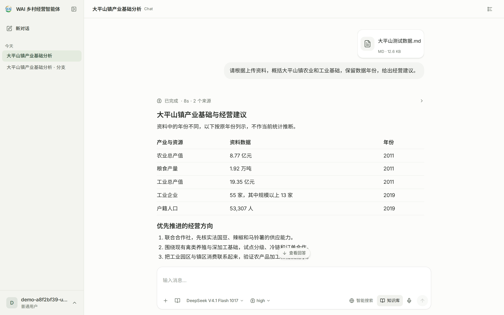
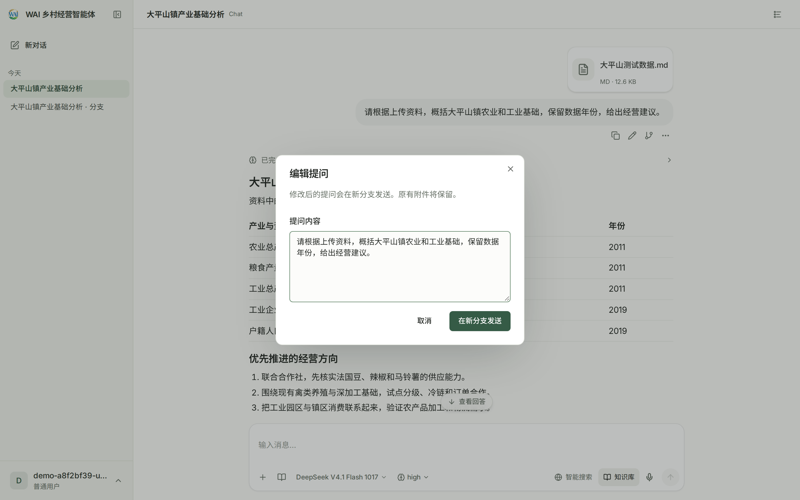

历史、重试与分支
一项工作常要反复修改：换个口径再答一次，改一个条件重新测算，沿着某一步换个方向论证。重新回答、编辑重发和分支，让你在不丢失原有内容的情况下尝试不同做法。
#管理历史对话
左侧栏保存你所有的对话。点一条，回到那段对话，可以继续追问。
把鼠标移到某条对话上，点出现的「对话操作」按钮：
| 操作 | 作用 |
|---|---|
| 重命名 | 修改对话标题。标题默认由系统根据你的第一个问题生成 |
| 置顶 | 把这条对话固定在列表最前面，再点一次取消置顶；置顶随账号保存，刷新或重新登录后仍保留 |
| 删除 | 删除这段对话，清理其历史与文件；其他分支仍在使用的内容会保留 |

对话按时间分组显示：置顶的在最前，然后是今天、昨天、30 天内，更早的按月份分组。
#消息操作
每条消息下方有一排操作按钮。
你的提问下方：
| 按钮 | 作用 |
|---|---|
| 复制提问 | 复制提问的文字 |
| 编辑重发 | 修改这条提问，在新分支发送 |
| 在分支中继续 | 以这条提问为终点，开一段新对话 |
| 更多 | 更多操作 |
助手回答下方：
| 按钮 | 作用 |
|---|---|
| 复制回答 | 复制回答的文字 |
| 重新回答 | 在当前会话重新回答同一个问题，保留可切换的答案版本 |
| 在分支中继续 | 以这条回答为终点，开一段新对话 |
| 更多 → 下载 Markdown | 把回答保存为 .md 文件 |

#分支
分支是从对话中间某条消息派生出来的一段新对话。
打个比方：你和助手聊了一长串，聊到第三个问题时，你想试另一种问法，又不想丢掉已经聊好的内容。这时你从那个位置「分出去」，得到一段新的对话。新对话从那里接着走，原对话原封不动。
原对话： 问题1 → 回答1 → 问题2 → 回答2 → 问题3 → 回答3
│
在「回答2」上点「在分支中继续」
│
新对话： 问题1 → 回答1 → 问题2 → 回答2 → （从这里开始，你接着问）分支有这些特点：
- 原对话不变。 创建分支不会修改、删除原对话里的任何内容。
- 只带走到这条消息为止的内容。 这条消息之后的问答，不会出现在分支里。
- 文件跟着走。 你上传过的附件，和助手已经交付的文件，在分支里都还在。
- 设置也跟着走。 分支沿用原对话的工作方式、模型、思考强度，以及联网搜索和知识库的开关。
- 是一段独立的新对话。 它出现在左侧栏的历史里，标题是「原标题 · 分支」，可以重命名、置顶、删除。之后你在分支里怎么聊，都不影响原对话。

#创建分支的三种方式
#在分支中继续
在一条提问或已完成回答下方点「在分支中继续」。新对话保留到这条消息为止的全部内容。从提问处分支时，点「继续执行」即可让助手回答这条提问，也可直接补充新消息。
适合： 想从一个中间结论出发，往另一个方向追问，同时保留原来的方向。
例如：助手给出了三个产业方向的比较。你在这条回答上分支，一个分支继续深挖「肉鸡加工」，原对话继续讨论「果蔗」。
#编辑重发
点你自己提问下方的「编辑重发」，弹出「编辑提问」对话框，里面是原来的问题。修改后点「在新分支发送」。

系统会创建一个新分支：保留这条提问之前的所有内容，把你修改后的提问发出去，得到新的回答。原来带的附件会保留。
适合： 问题没问对，想换一种问法；想补充一个条件；发现提问里有错别字或数字写错了。
#重新回答
点击回答下方的重新回答按钮，助手会在当前会话重新回答同一个问题，保留原问题的附件与技能。侧栏不会新增会话。
有多个回答时，可用回答下方的上一版、下一版按钮切换。版本选择会保存，刷新后仍可查看。继续提问会沿用当前所选版本的上下文；切换回来时，也会恢复该版本已有的后续对话。
助手正在回答时，先等待完成或停止，再重新回答或切换版本。
#如何选择
| 你的情况 | 用哪个 |
|---|---|
| 回答不理想，想让助手再答一次 | 重新回答 |
| 问题问得不好，想改一改再问 | 编辑重发 |
| 回答有价值，想沿着中间某一步换个方向 | 在分支中继续 |
| 想保留两个版本，对比哪个更好 | 重新回答，再切换回答版本比较 |
#分支和「新对话」的区别
| 分支 | 新对话 | |
|---|---|---|
| 起点 | 带着前面的聊天内容和文件 | 一片空白 |
| 要不要重新上传文件 | 不用 | 要 |
| 适合 | 沿着已有的内容换个方向 | 完全不相关的新任务，或者想换工作方式 |
#排队、纠偏、停止与继续
助手工作时，输入框旁可选择「排队发送」或「纠偏当前任务」。排队消息等当前任务完成后逐条处理；纠偏会在当前工具轮结束后加入当前任务。
点队列里的消息可撤回并返回编辑，附件和技能一起恢复。输入框已有草稿时，先发送或清空草稿。已经开始执行的消息不能撤回。
输入框为空时，发送位置显示停止按钮；输入框有草稿时，旁边仍有独立停止按钮。停止会中止当前任务并撤回排队消息，保留未发送的草稿。
任务未完成时，可点「继续执行」接着处理已有上下文。继续不会重新发送原问题。